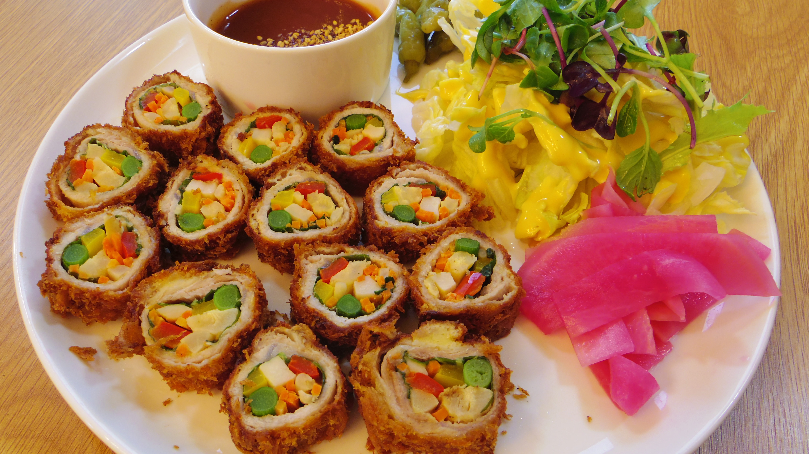
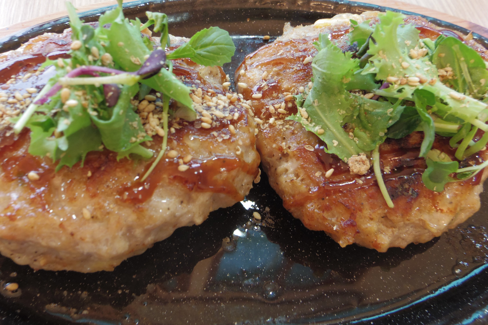
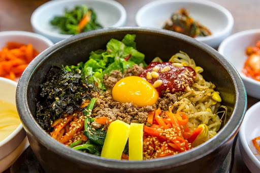

더덕제육볶음
매콤달콤한 제육볶음과 더덕의 만남.남녀노소 모두가 좋아하는 스테디셀러

에드워드 권이 극찬한 바로 그 음식.
더덕 롤가스
돼지고기에 영양만점 더덕과 채소를 감싸 만든 롤가스.에드워드 권이 극찬한 바로 그 음식.

더덕구이 정식
기본에 충실한 그 맛.영양소가 가득한 더덕의 맛을 느껴보세요.

비밀 레시피가 감미된 맛있는 떡갈비.
더덕 떡갈비 정식
더덕과 떡갈비의 만남.비밀 레시피가 감미된 맛있는 떡갈비.

메밀 막국수
강원도 봉평의 대표 먹거리.고소한 맛이 일품.

메밀전
또다른 강원도 봉평의 대표 먹거리.메밀의 고소한 향이 가득.

메밀전병
메밀전의 또 다른 변신.매콤한 소가 가득 들어있어 누구나 좋아하는 음식.

100% 강원도 현지 나물만 사용합니다.
메밀산채비빔밥
더덕과 메밀 그리고 산채가 만났다.100% 강원도 현지 나물만 사용합니다.
NOthing dignissim quis nunc vitae laoreet. Etiam ut mattis leo, vel fermentum tellus. Sed sagittis rhoncus venenatis. Quisque commodo consectetur faucibus. Aenean eget ultricies justo.